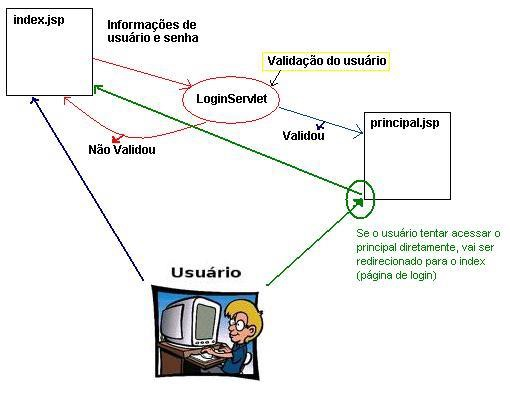

PROGRAMAÇÃO DE
SOFTWARE CORPORATIVO
ATIVIDADE 07
- Criar uma página HTML pedindo atributos de
um usuário e, ao clicar em salvar, chamar um servlet e
retornar essas informações;
- Estenda o exemplo anterior para salvar no banco de
dados as informações passadas;
- Criar um servlet que consulte a lista de uma
entidade no banco de dados e mostre os dados em uma tabela. Utilize
hibernate para comunicação com a base de dados;
- Criar página de login e home integradas com
as outras camadas. O usuário deve ser verificado na base de
dados se existe e ser validado na camada de negócios.
Utilizar sessão para armazenar alguma
informação a respeito do usuário logado;
- Crie uma página JSP contendo um
formulário de cadastro de pessoa. Crie uma outra
página JSP que mostre as informações
cadastradas após a submissão da primeira
página. Não utiliza servlets, utilize apenas envio e
leitura de parâmetros via página JSP;
- Usando apenas JSP, faça uma busca de uma
lista de entidades da base de dados (usando hibernate) e mostre
essas informações em uma tabela com cores alternadas;
- Usando servlets e JSP, crie uma
aplicação que implemente a figura abaixo. A
validação do usuário deve ser feita em uma
tabela na base de dados (usando hibernate).
